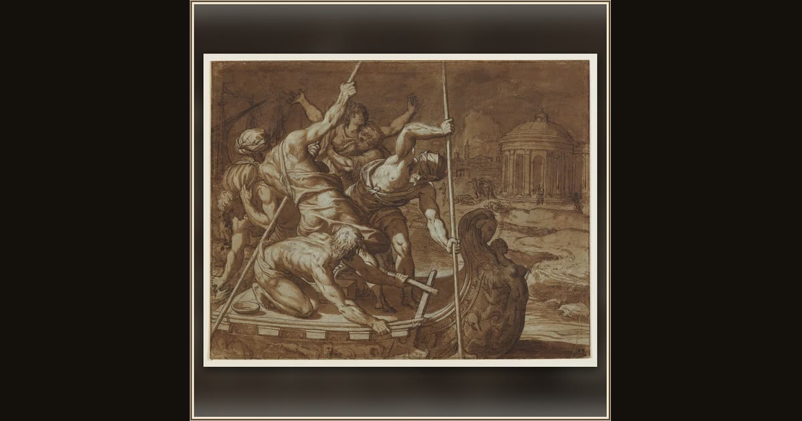

The Abduction of Helen
Giuseppe Salviati (Giuseppe Porta, called Il Salviati) · mid-16th century · met
Men carry a woman onto a boat in the abduction of Helen. In this play, Helen says Hera gave Paris a breathing image in her place (31–34). Explore its place in Euripides's Plays, Helen, line 31.